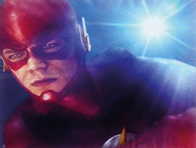

After an extreme street battle with the Reverse-Flash, our city's very own Scarlet Speedster disappeared in an explosion of light. The cause of the fight is currently unknown. According to witnesses, The Flash, with help from Starling City's Green Arrow, The Atom, and Hawkgirl, began fighting the Reverse-Flash around midnight last night. The sky took on a deep crimson color as the ensuing battle created the most destruction this city has seen since The Flash first arrived in Central City.
Several trucks were caught in the fray, spiling their contents into the street. Power outages swept nearly twenty city block, between 16th street and Adams Avenue. Five of those blocks still remain without power. All of the buildings in the area were evacuated by the CCPD, with help from The Atom.
According to reports, as The Flashand Reverse-Flash battled with each other between two overturned tanker truck, the lightning emanating from the speedsters threatened to ignite spilled oil leaking from one of the trucks.

The smoke from the truck's engine made it difficult to see, but it appeared at one point they were having a very heated conversation before continuing the fight. Then, suddenly, The Flash sped after Reverse-Flash and the two vanished leaving The Atom, Green Arrow and Hawkgirl behind.
An eyewitness who watched the battle from her apartment building before being evacued said, "Ït was hard to see, but The Flash, and Reverse-Flash were zipping up and down Monroe Avenue and then nothing. It was weird."
Other witness described a similar phenomenon: a blinding light followed by darkness as the sky returned to black. And as the streets quieted, it took only a moment to realize The Flash and Reverse-Flash were gone without a trace.
Central City Police Chief, Joe West held a press conference in the wee hours of the morning stating, "We don't have very many details now, What we do know is tonight Central City's greatest protector vanished in a flash. We only hope he returns just as quickly." A sentiment shared by all who call this great city home.
WORLD >
WAYNE TECH/QUEEN INC MERGER COMPLETE
One of the many ways that radiation causes illness is by damaging our DNA. A Unversity team wanted to find out whether they could bread the common bacteria E. coli, bombarded it with radiation until 99 percent of the microbes were dead. and then bred a new generation from survivors.
After 20 rounds of this, they wound up with a group of E. coli that could repair radiation damage after being blasted with ionizing radiation that was four orders of magnitude greater than what their ancestors could endure.
Analized the 69 known mutations that allowed these E. coli to be so good at repairing themselves.
Our bodies repair DNA in many of the same ways that bacteria does. So this study sheds light on ways that human cells could one day repair their DNA in the wake of radiation damage. But of course, there are a lot unknowns here. "This extreme resistance we're looking at is a complicated phenotype repair systems can adapt and those adaptations contribuite a lot to radiation resistance." the DNA repair systems can adapt and those adaptations contribuite a lot to radiation resistance. It's also possible that this research could help future astronauts and colonists on other worlds where there is
TECH >
CARLA THE WOOLLY MAMMOTH CHARMS AT THE ZOO
The first cloned Woolly Mammoth, Carla has won over crowds at the new paleontologist zoo in Starling City. A miracle mammal that scientist had enough blood and bone to bring an Ice Age icon kicking and stomping into the modern age. During the autopsy, they were surprised to find an incredibly well preserved corpse better, in fact, than "a body of a human buried for six months," told us another scientist.
Since last summer, the scientific community has been buzzing about the possibility of breathing life back into those old bones. If scientists are success- ful, it won't look exactly like it once did.
The world thought it saw the last of the woolly mammoths somewhere arround 10,000 years ago, although small groups may have persisted longer in Alaska and on islands of the Siberia coast.
Acording to science they may had been hunted into extinction by -- well here's a surprise -- humans. Of course, the global warming and celestial bombar- ments are also potential culprits. But if it was indeed us, well it looks like we may have changed our minds. So, welcome back woolly mammoth. And sorry about all that extinction. It is one thing to clone it for scientific purpose, and another to clone it for the sake of curiosity.
SCIENCE >
RED SKIES VANISH
A team of Central City astronomers from an astrophysics research team have discovered a peculiar example of a celestial body, known as a brown dwarf, with unusually red skies.
The line between stars and planets. They are to big to be considered planets, yet they do not have sufficient material to fuse hydrogen in their cores to fully develop into stars.
They are midway in mass between stars, like our Sun. Sometimes described as failed stars, they do not have an internal source of energy, so they are cold, very faint, and keep on cooling over time.
In Central City the use of an innovative data analysis technique have shown that the reason for its peculiarity is the presence of a thick layer of clouds in its upper atmosphere caught the researchers' attention for its extremely red apperance compared to "normal" brown dwarfs. Further observations with the Very Large Telescope in factors in vehicle colisions include all factors related to drivers and other road users that may contribute to a collision. Examples include driver behavior, visual and auditory acuity, decision making ability and reaction speed.